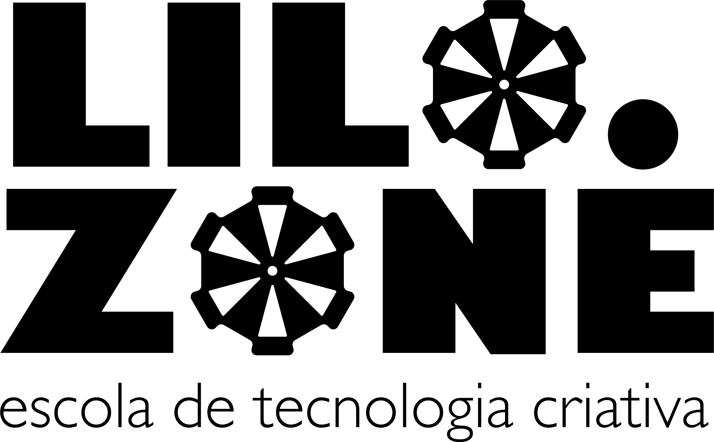

Mentoria
Um pouquinho sobre a pessoa que vos fala e o espaço onde essas experiências em tecnologia
criativa acontecem.

Lina Lopes
é consultora, empreendedora e artista com background interdisciplinar que abrange teatro,
engenharia e computação. Possui ampla experiência em projetos, trabalhando nas temáticas de
design paramétrico e generativo, video mapping, interatividade, programação com Arduino,
wearables, internet das coisas, biomateriais, entre outros. É palestrante sobre inovação e
mentora de bootcamps. Dirige o LILO.ZONE, espaço voltado ao uso criativo de tecnologia e
está à frente da iniciativa LILO.THINK voltada à processos imersivos.

LILO.ZONE
é uma escola que surgiu do encontro entre profissionais das artes, tecnologia e design. Sua
sede atual é uma casa localizada em São Paulo, próximo ao metrô Vila Madalena, que abriga
uma atmosfera inovadora e experimental, onde empreendedores, makers, criativos e
invencionastes no geral compartilham conhecimentos e ferramentas para conduzir seus projetos
de uma forma muito
mais conectada e ágil.
O LILO.ZONE abriga diversos espaços que promovem a experimentação e o desenvolvimento de protótipos. Conta com um Makerspace com impressoras 3D e cortadora a laser, além de espaços exclusivos como o Wearables Lab, para fazer experimentos em tecnologias vestíveis e até mesmo um Laboratório de Biohacking, o primeiro e único laboratório independente de biotecnologia do país.
O LILO.ZONE abriga diversos espaços que promovem a experimentação e o desenvolvimento de protótipos. Conta com um Makerspace com impressoras 3D e cortadora a laser, além de espaços exclusivos como o Wearables Lab, para fazer experimentos em tecnologias vestíveis e até mesmo um Laboratório de Biohacking, o primeiro e único laboratório independente de biotecnologia do país.